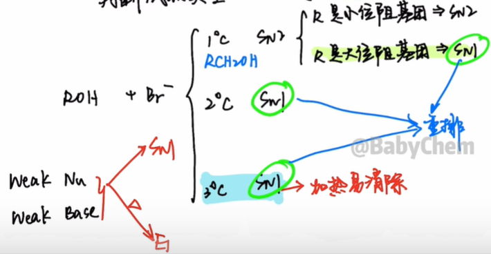
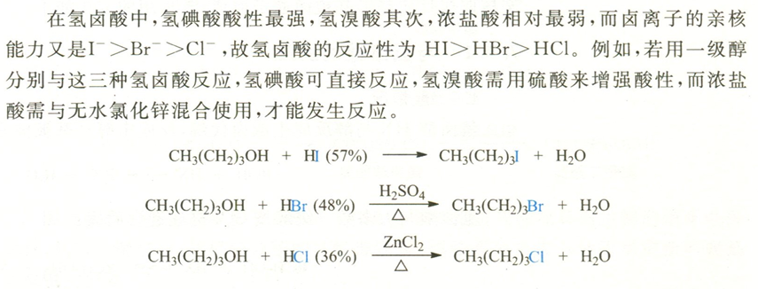
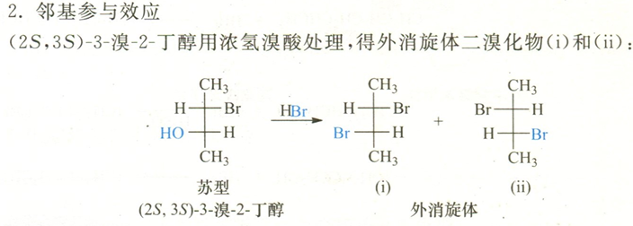
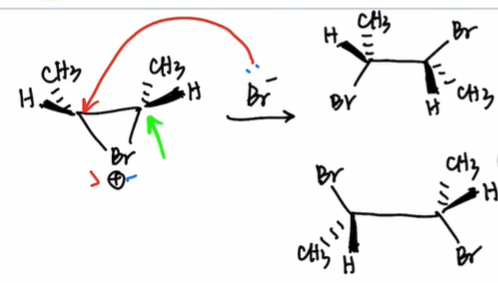
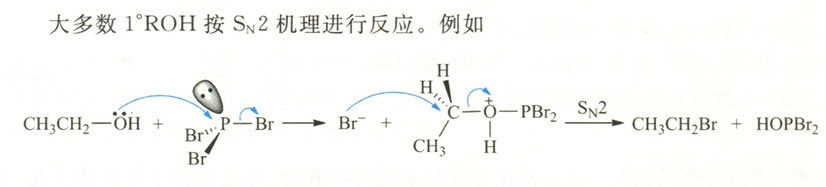
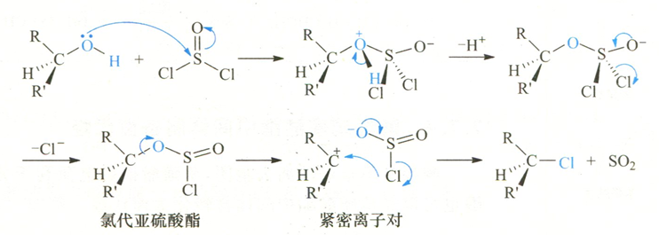
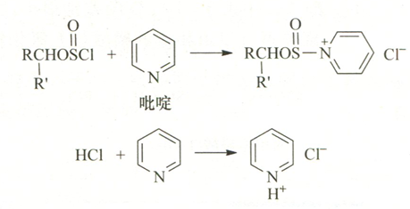
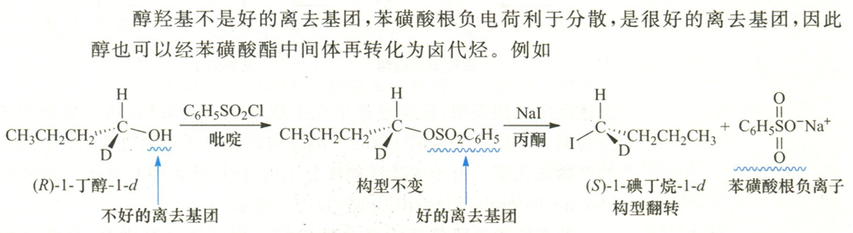
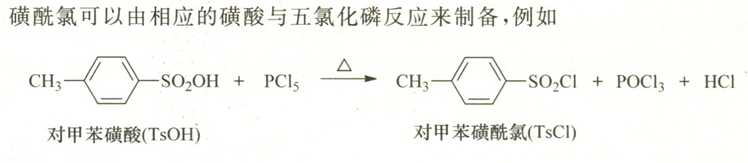
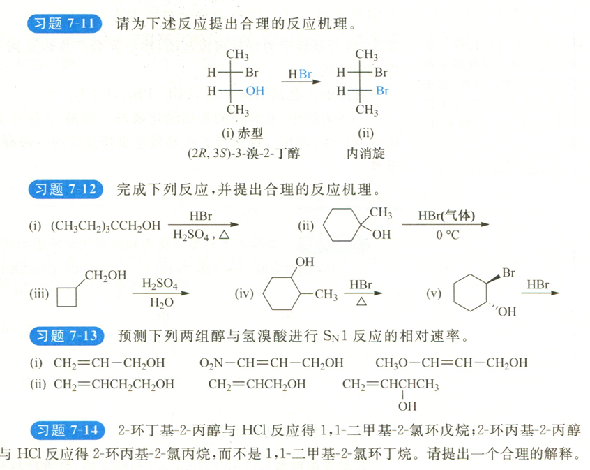

<meta data-alternate="https://freshmark.sunisalex.org/posts/chemistry/babychem/alcohol-to-halide-conversion-and-alcohol-elimination/" data-article="true" data-canonical="https://freshmark.sunisalex.org/en/posts/chemistry/babychem/alcohol-to-halide-conversion-and-alcohol-elimination/" data-description="These are study notes for Basic Organic Chemistry L9-3: Do You Really Understand Substitution and Elimination Reactions of Alcohols?." data-freshmark-page data-title="Basic Organic Chemistry L9-3 — Freshmark"><main><header class="container article-header"><a href="/en/" class="back-link">← Back to all writing</a><p class="eyebrow article-subject">Chemistry</p><h1>Basic Organic Chemistry L9-3</h1><p class="article-dek">These are study notes for Basic Organic Chemistry L9-3: Do You Really Understand Substitution and Elimination Reactions of Alcohols?.</p><div class="article-meta"><time datetime="2026-07-09">July 9, 2026</time><span>4 min read</span><span>Organic Chemistry · Chemistry Olympiad</span><span class="view-count" data-article-view-count hidden>Article views <strong data-article-views></strong></span><a href="index.md" download>Download Markdown</a><button type="button" class="article-share" data-share-article data-share-text="These are study notes for Basic Organic Chemistry L9-3: Do You Really Understand Substitution and Elimination Reactions of Alcohols?." data-share-title="Basic Organic Chemistry L9-3"><span data-share-label>Share article</span></button><output aria-live="polite" class="visually-hidden" data-share-status role="status"></output></div></header><div class="article-wrap"><aside class="toc"><div class="toc-head"><p>On this page</p><button type="button" class="toc-toggle" aria-expanded="false" aria-label="Toggle table of contents" data-toc-toggle><span class="toc-toggle-label">Table of contents</span><span class="toc-toggle-icon" aria-hidden="true"></span></button></div><nav aria-label="Table of contents" class="toc-links" data-toc-links><a href="#roh-hx" class="toc-level-2">ROH + HX</a><a href="#neighbor-participation-effect" class="toc-level-3">Neighbor participation effect</a><a href="#roh-pbr3" class="toc-level-2">ROH + PBr3</a><a href="#roh-socl2" class="toc-level-2">ROH + SOCl2</a><a href="#roh-tscl" class="toc-level-2">ROH + TsCl</a><a href="#ring-expansion-rearrangement" class="toc-level-2">Ring expansion rearrangement</a><a href="#practice" class="toc-level-2">Practice</a></nav></aside><article class="prose"><p>These are study notes for <a href="https://www.bilibili.com/video/BV1Pq4y1u7kE/?share_source=copy_web&amp;vd_source=8df86ec0f66b0d7c70b7414a1a60bc6a">Basic Organic Chemistry L9-3: Do You Really Understand Substitution and Elimination Reactions of Alcohols?</a>.</p><!--more--><p>#PartI:Alcohol substitution</p><h2 id="roh-hx">ROH + HX</h2><p><picture class="responsive-picture"><source srcset="image.freshmark-f6305d74a262-480w.avif 480w, image.freshmark-f6305d74a262-710w.avif 710w" type="image/avif"><source srcset="image.freshmark-f6305d74a262-480w.webp 480w, image.freshmark-f6305d74a262-710w.webp 710w" type="image/webp"></picture>Conclusion:</p><ol><li>Mechanism: hydroxyl oxonium ion (water is a good leaving group)</li><li>Small sterically hindered primary alcohol, otherwise <span class="math-expression math-inline" data-math-source="S_{N1}"></span>&#32;will rearrange</li><li>Alcohol reactivity: allyl type, benzyl type, 3°&gt;2°&gt;1°</li><li>Hydrohalic acid reactivity: <span class="math-expression math-inline" data-math-source="\ce{HI\gt HBr\gt HCl}"></span>&#32;<picture class="responsive-picture"><source srcset="image-1.freshmark-d18f6e7bde98-480w.avif 480w, image-1.freshmark-d18f6e7bde98-855w.avif 855w" type="image/avif"><source srcset="image-1.freshmark-d18f6e7bde98-480w.webp 480w, image-1.freshmark-d18f6e7bde98-855w.webp 855w" type="image/webp"></picture></li></ol><h3 id="neighbor-participation-effect">Neighbor participation effect</h3><p><picture class="responsive-picture"><source srcset="image-2.freshmark-6da2d08fa3c8-480w.avif 480w, image-2.freshmark-6da2d08fa3c8-704w.avif 704w" type="image/avif"><source srcset="image-2.freshmark-6da2d08fa3c8-480w.webp 480w, image-2.freshmark-6da2d08fa3c8-704w.webp 704w" type="image/webp"></picture></p><p>In order to explain the racemic product and the faster reaction rate, in connection with the three pairs of lone pairs of electrons of the Br atom, the neighbor group participation effect was proposed.</p><p><picture class="responsive-picture"><source srcset="image-3.freshmark-0decc293b6da-480w.avif 480w, image-3.freshmark-0decc293b6da-719w.avif 719w" type="image/avif"><source srcset="image-3.freshmark-0decc293b6da-480w.webp 480w, image-3.freshmark-0decc293b6da-719w.webp 719w" type="image/webp"></picture></p><p>Neighbor group participation requires stereochemistry: trans coplanar</p><p>The lone pair of electrons of the bromine atom fills the antibonding orbital of the carbon-oxygen bond, causing the departure of water to form <strong>Bronium ion</strong>.</p><p><picture class="responsive-picture"><source srcset="image-4.freshmark-92e532f7cfcf-480w.avif 480w, image-4.freshmark-92e532f7cfcf-823w.avif 823w" type="image/avif"><source srcset="image-4.freshmark-92e532f7cfcf-480w.webp 480w, image-4.freshmark-92e532f7cfcf-823w.webp 823w" type="image/webp"></picture></p><p>Next, the bromium ion is attacked by <span class="math-expression math-inline" data-math-source="\ce{Br-}"></span>&#32;to open the ring, and attacks from the left and right are possible, so two <strong>racemates</strong> with a chirality ratio of 50:50 are generated.</p><p><picture class="responsive-picture"><source srcset="image-5.freshmark-0c293405c613-480w.avif 480w, image-5.freshmark-0c293405c613-498w.avif 498w" type="image/avif"><source srcset="image-5.freshmark-0c293405c613-480w.webp 480w, image-5.freshmark-0c293405c613-498w.webp 498w" type="image/webp"></picture></p><h2 id="roh-pbr3">ROH + PBr3</h2><p><span class="math-expression math-display" data-math-source="\begin{gathered} \ce{3ROH + PX3 -&gt; 3RX + H3PO3}\\ \ce{ROH + PX5 -&gt; RX + POX3 + HX} \end{gathered}" data-math-display></span> P is a third period element, so the P atom in <span class="math-expression math-inline" data-math-source="\ce{PBr3}"></span>&#32;has a 3d orbital and can be attacked by the oxygen lone pair of electrons of the hydroxyl group, turning the hydroxyl group into a good leaving group and producing the nucleophile <span class="math-expression math-inline" data-math-source="\ce{Br-}"></span>.</p><blockquote><p>This section was added by Claude, an AI model made by Anthropic, after the author's solution. It is not written by the original author.</p></blockquote><p><strong>Correction (added by Claude)</strong> Explaining this step with &quot;P has 3d orbitals&quot; is an older picture. Computational chemistry shows that third-period 3d orbitals are too high in energy to take meaningful part in bonding. What actually happens: the alcohol oxygen attacks P as a nucleophile and <strong>displaces one <span class="math-expression math-inline" data-math-source="\ce{Br-}"></span></strong> (P stays three-coordinate, so no expanded octet is needed), giving <span class="math-expression math-inline" data-math-source="\ce{RO-PBr2H+}"></span>. The <span class="math-expression math-inline" data-math-source="\ce{Br-}"></span>&#32;then attacks the carbon from the back side (<span class="math-expression math-inline" data-math-source="S_N2"></span>), and <span class="math-expression math-inline" data-math-source="\ce{HOPBr2}"></span>&#32;leaves. This is also why bromination of a chiral secondary alcohol with <span class="math-expression math-inline" data-math-source="\ce{PBr3}"></span>&#32;inverts its configuration.</p><p>Also, &quot;Hoffmann&quot; under regioselectivity below should be <strong>Hofmann</strong> (Hofmann's rule).</p><p><picture class="responsive-picture"><source srcset="image-6.freshmark-a65e0d62037a-480w.avif 480w, image-6.freshmark-a65e0d62037a-826w.avif 826w" type="image/avif"><source srcset="image-6.freshmark-a65e0d62037a-480w.webp 480w, image-6.freshmark-a65e0d62037a-826w.webp 826w" type="image/webp"></picture>Conclusion:</p><ol><li>Chlorination: <span class="math-expression math-inline" data-math-source="\ce{PCl3}/\ce{PCl5}"></span>&#32;Bromination: <span class="math-expression math-inline" data-math-source="\ce{PBr3}"></span>&#32;(phosphorus pentabromide is unstable) Iodination: <span class="math-expression math-inline" data-math-source="\ce{P + I2}"></span></li><li>Mainly used for 1°, 2°</li><li>Low temperature to avoid rearrangement</li></ol><h2 id="roh-socl2">ROH + SOCl2</h2><p><span class="math-expression math-display" data-math-source="\ce{ROH + SOCl2 -&gt;[\triangle] SO2 ^ + HCl ^ + RCl}" data-math-display></span></p><p>Reaction advantages: directly obtain alkyl chloride, mild conditions, fast rate, high yield, and the product is easy to purify.</p><p>The configuration of the alcohol is maintained before and after the reaction, and chlorosulfite can be separated at low temperature and decomposed into alkyl chloride and <span class="math-expression math-inline" data-math-source="\ce{SO2}"></span>&#32;upon heating, which indicates that the reaction mechanism is:</p><p><picture class="responsive-picture"><source srcset="image-7.freshmark-abbbc8fe13a3-480w.avif 480w, image-7.freshmark-abbbc8fe13a3-742w.avif 742w" type="image/avif"><source srcset="image-7.freshmark-abbbc8fe13a3-480w.webp 480w, image-7.freshmark-abbbc8fe13a3-742w.webp 742w" type="image/webp"></picture></p><p>During the reaction, chlorosulfite is first generated, and then decomposes into a tight ion pair. <span class="math-expression math-inline" data-math-source="\ce{Cl-}"></span>&#32;attacks the carbocation as part of the leaving group (LG), that is, &quot;returns internally&quot; to obtain the product chloroalkane with maintained configuration. Since the substitution seems to be carried out within the molecule, it is called intramolecular nucleophilic substitution, represented by <span class="math-expression math-inline" data-math-source="S_Ni"></span>.</p><p>If the weak nucleophile pyridine is added to a mixture of alcohol and thionyl chloride, a product with a configuration flip is obtained.</p><p><picture class="responsive-picture"><source srcset="image-8.freshmark-d461f6a5f695-459w.avif 459w" type="image/avif"><source srcset="image-8.freshmark-d461f6a5f695-459w.webp 459w" type="image/webp"></picture></p><p>The generated <span class="math-expression math-inline" data-math-source="\ce{Cl-}"></span>&#32;is used as a nucleophile to attack chlorosulfite from the back side of the carbon-oxygen bond to obtain a configuration-inverted product (<span class="math-expression math-inline" data-math-source="S_N2"></span>)</p><p><picture class="responsive-picture"><source srcset="image-9.freshmark-468d73303111-480w.avif 480w, image-9.freshmark-468d73303111-561w.avif 561w" type="image/avif"><source srcset="image-9.freshmark-468d73303111-480w.webp 480w, image-9.freshmark-468d73303111-561w.webp 561w" type="image/webp"></picture></p><blockquote><p>The reaction of tertiary amines (<span class="math-expression math-inline" data-math-source="R_3N"></span>) and HCl is also conducive to the formation of chloride ions, so tertiary amines, like pyridine, can catalyze this reaction: <span class="math-expression math-display" data-math-source="R_3N + HCl \rightarrow R_3NH^+ + Cl^-" data-math-display></span></p></blockquote><h2 id="roh-tscl">ROH + TsCl</h2><p>Ts=Tosyl=p-toluenesulfonic acid group</p><p><picture class="responsive-picture"><source srcset="image-10.freshmark-87138d0b71c8-480w.avif 480w, image-10.freshmark-87138d0b71c8-950w.avif 950w" type="image/avif"><source srcset="image-10.freshmark-87138d0b71c8-480w.webp 480w, image-10.freshmark-87138d0b71c8-950w.webp 950w" type="image/webp"></picture></p><p><picture class="responsive-picture"><source srcset="image-11.freshmark-8b9d5d03b263-480w.avif 480w, image-11.freshmark-8b9d5d03b263-748w.avif 748w" type="image/avif"><source srcset="image-11.freshmark-8b9d5d03b263-480w.webp 480w, image-11.freshmark-8b9d5d03b263-748w.webp 748w" type="image/webp"></picture></p><p>Since then, 4 methods for converting alcohols into halogenated hydrocarbons have been completed.</p><p>#PartII:Elimination of alcohol</p><ol><li>Protonation of hydroxyl group</li><li>Formation of carbocation</li><li>*Possible rearrangement</li><li>Elimination into olefins <span class="math-expression math-inline" data-math-source="\begin{cases} \text{Stereoselectivity}\begin{cases}Z,\\E\end{cases}\\ \text{Regional selectivity}\begin{cases}Zaitsev,\\Hoffmann\end{cases} \end{cases}"></span></li></ol><p>In industry, commonly used alcohols are dehydrated on the surface of alumina or silicate at 350~400°C. This reaction does not cause rearrangement**.</p><p><picture class="responsive-picture"><source srcset="image-12.freshmark-eaf82870e21a-480w.avif 480w, image-12.freshmark-eaf82870e21a-629w.avif 629w" type="image/avif"><source srcset="image-12.freshmark-eaf82870e21a-480w.webp 480w, image-12.freshmark-eaf82870e21a-629w.webp 629w" type="image/webp"></picture></p><h2 id="ring-expansion-rearrangement">Ring expansion rearrangement</h2><p>Generally speaking, for carbocations, six-membered rings have less tension and are more stable than five-membered rings.</p><p><picture class="responsive-picture"><source srcset="image-13.freshmark-2b8d252cecb6-480w.avif 480w, image-13.freshmark-2b8d252cecb6-761w.avif 761w" type="image/avif"><source srcset="image-13.freshmark-2b8d252cecb6-480w.webp 480w, image-13.freshmark-2b8d252cecb6-761w.webp 761w" type="image/webp"></picture></p><h2 id="practice">Practice</h2><p><picture class="responsive-picture"><source srcset="image-14.freshmark-bd760872faef-480w.avif 480w, image-14.freshmark-bd760872faef-846w.avif 846w" type="image/avif"><source srcset="image-14.freshmark-bd760872faef-480w.webp 480w, image-14.freshmark-bd760872faef-846w.webp 846w" type="image/webp"></picture></p></article></div><section class="container comments" data-comments data-comments-path="/en/posts/chemistry/babychem/alcohol-to-halide-conversion-and-alcohol-elimination/"><div class="comments-head"><div><p class="eyebrow">Comments</p><h2 data-comments-title>Comments</h2></div><p>Sign in to join the discussion. Email is verified only when you register.</p></div><div class="comment-list" aria-live="polite" data-comment-list><p class="comment-state" data-comment-state>Loading comments…</p></div><button type="button" class="comment-more" data-comments-more hidden>Load older comments</button><div class="comment-auth" data-comment-auth><p class="comment-auth-status" data-auth-loading>Checking your session…</p><div hidden data-auth-guest><form class="comment-auth-form" data-auth-login><h3>Sign in to comment</h3><label>Email<input autocomplete="email" name="email" maxlength="254" required type="email"></label><label>Password<input autocomplete="current-password" name="password" maxlength="128" required type="password"></label><div class="comment-form-foot"><p class="comment-form-status" role="status" data-auth-login-status></p><button type="submit">Sign in</button></div></form><details class="comment-register"><summary>Need an account? Register</summary><form class="comment-auth-form" data-auth-register><label>Name<input autocomplete="name" name="name" maxlength="40" required></label><label>Email<input autocomplete="email" name="email" maxlength="254" required type="email"></label><label>Password<input autocomplete="new-password" name="password" maxlength="128" required type="password" minlength="8"></label><p class="comment-auth-hint">Use at least 8 characters.</p><div class="comment-form-foot"><p class="comment-form-status" role="status" data-auth-register-status></p><button type="submit">Register</button></div></form></details></div><form class="comment-auth-form" hidden data-auth-verify><p>We sent a code to your email. Complete registration within 10 minutes.</p><label>Six-digit code<input autocomplete="one-time-code" name="code" maxlength="6" required minlength="6" inputmode="numeric" pattern="[0-9]{6}"></label><div class="comment-form-foot"><p class="comment-form-status" role="status" data-auth-verify-status></p><button type="submit">Complete registration</button></div></form><div class="comment-auth-user" data-auth-user hidden><p>Signed in as <strong data-auth-user-name></strong> <span data-auth-user-email></span></p><button type="button" data-auth-logout>Sign out</button></div></div><form class="comment-form" hidden data-comment-form><label>Comment<textarea maxlength="2000" minlength="2" name="body" placeholder="Share your thoughts…" required rows="5"></textarea></label><p class="comment-markdown-hint">Markdown supported: emphasis, links, quotes, lists, and code.</p><label aria-hidden="true" class="comment-honeypot">Website<input autocomplete="off" name="website" tabindex="-1"></label><div class="comment-form-foot"><p class="comment-form-status" role="status" data-comment-form-status></p><button type="submit" data-comment-submit>Post comment</button></div></form></section></main>